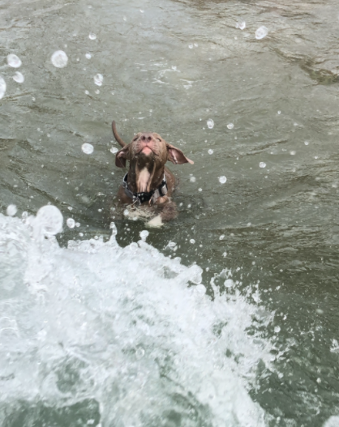
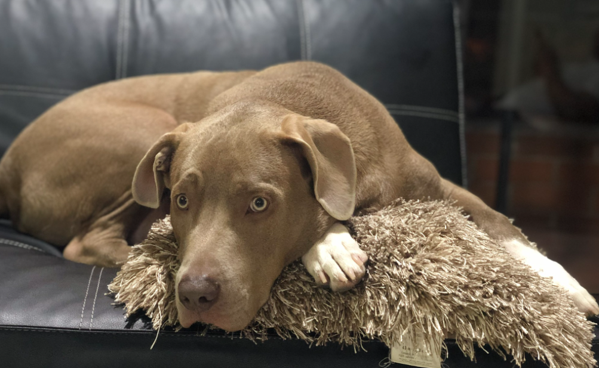
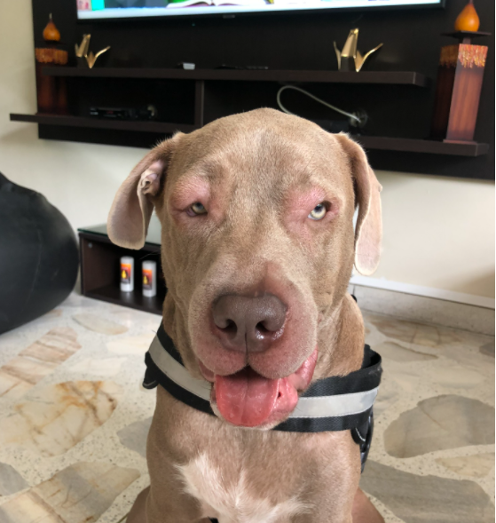
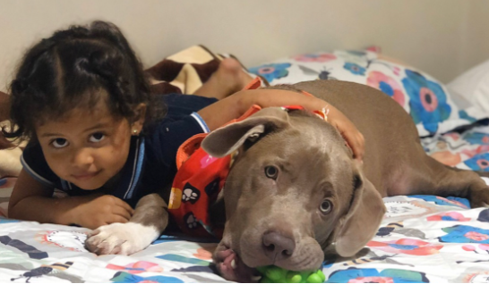
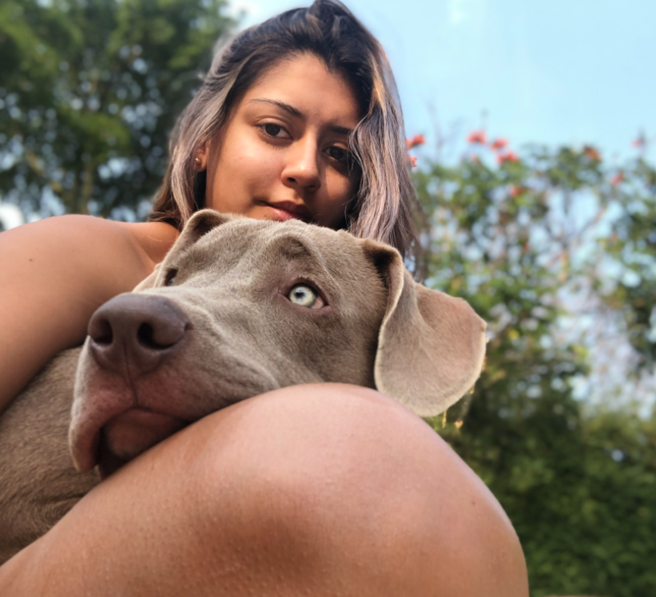
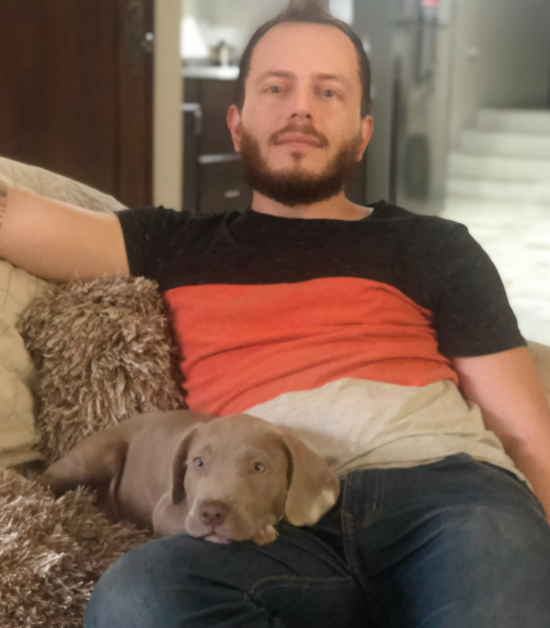
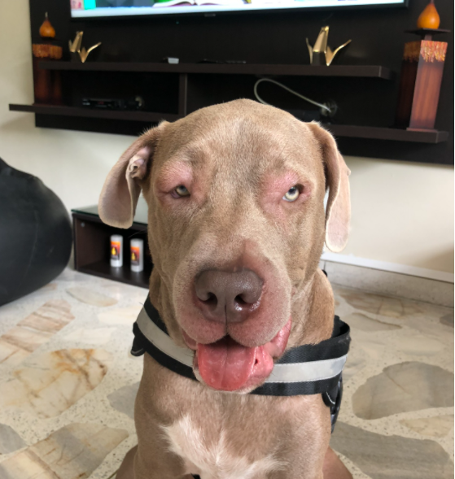
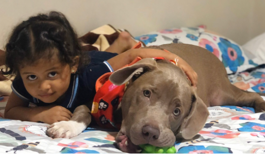
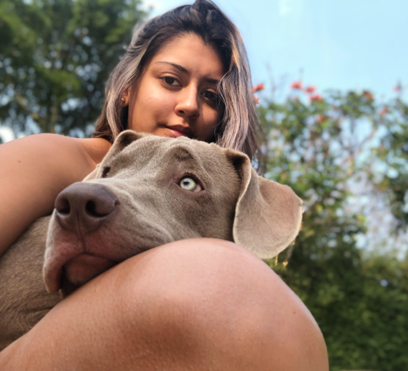
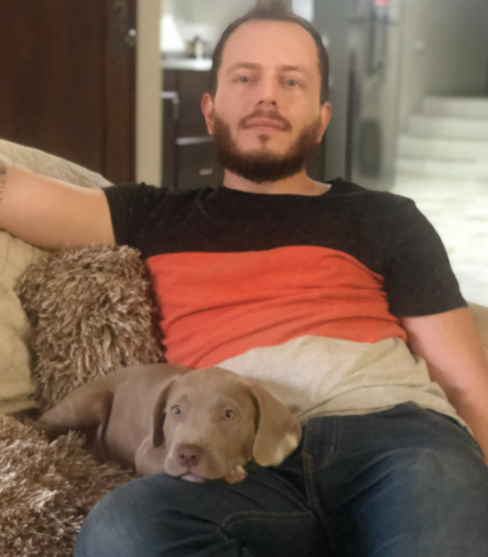

Soy Teo, tengo un año y tres meses de haber llegado a este mundo y de tener una linda familia, mi mamá humana me rescató después que mi mamá perruna a los 7 días decidió dejar de alimentarnos, mis hermanos y yo nos estabámos muriendo en un basurero. Mi mamá humana tuvo que darme tetero durante 3 meses, llevarme a controles y revisiones donde el doctor para poder salir adelante, y aquí esto, soy un perro muy feliz.
Soy una mezcla de Pitbull con no sé que más, al principio, mis mamá pensó que iba a ser pequeño, pero crecí inmensamente. Además, nací con un problema en mis patas delanteras con una malformación que me impiden correr y sentarme bien, sin embargo, mi familia aceptó y me ayudó con todos mis problemas, me llevan a revisiones periódicas, donde me aplican unas inyecciones que a veces me duelen mucho, pero soy muy noble, tierno y carismático que me impiden comportarme de manera grosesa con las demás personas y perros.
En esta casa vivimos 4 personas y yo, su mascota
| Nombre | Edad | Parentezco |
|---|---|---|
| Laura | 25 años | Mi mamá humana |
| Diana | 51 años | Mi abuela |
| Álvaro | 61 años | Mi abuelo |
| Manuela | 20 años | Sobrina de mi abuela |
Además, también comparto con otras personas que vienen mucho a casa:
Y mi persona preferida en el MUNDO: Sebastián Burgos, él es mi papá. Él no vive con nosotros, pero lo amo mucho y me orino cuando lo veo, es muy emocionante cuando siento que está llegando.
Ahora, les voy a mostrar un proceso lindo que mi mamá hizo sobre mí, desde que llegué a este hogar, y hasta que cumplí mi primer añito.
Espero les gustePero... por si no siguen a mi mami en sus redes sociales, les muestro un carrete con información recopilada:
  






